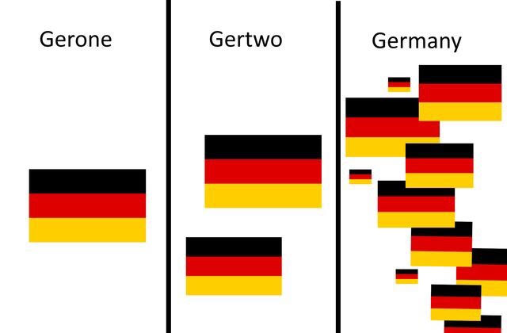
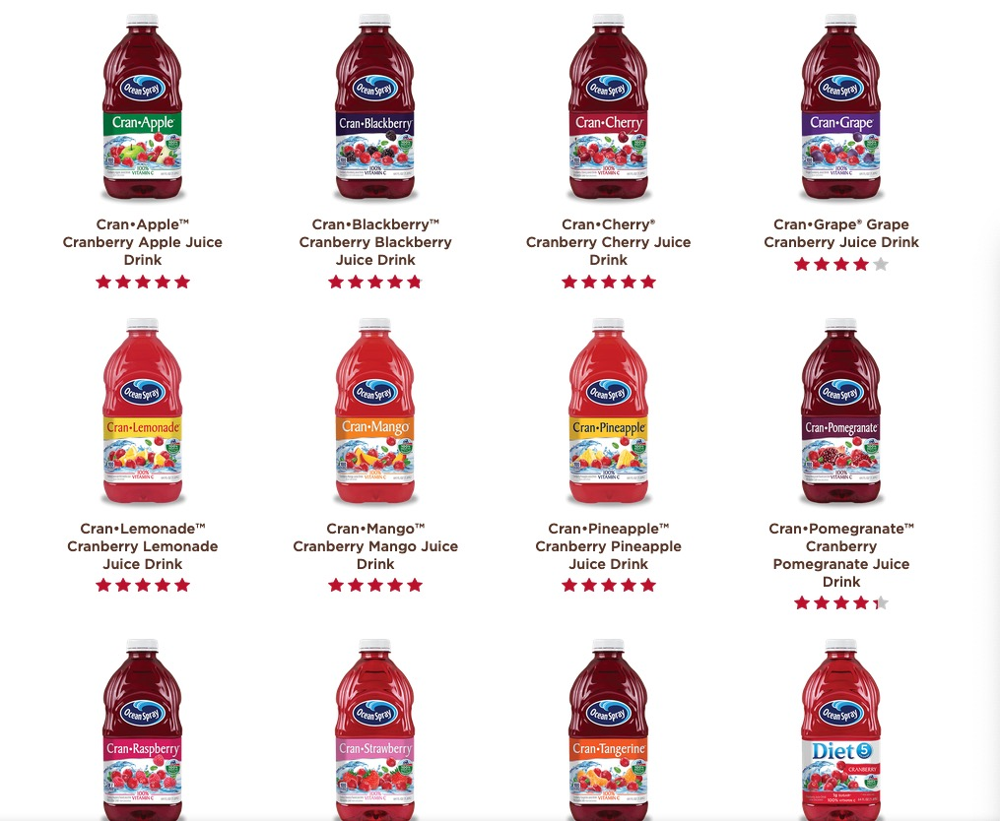
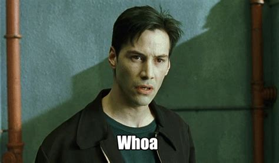

… and some things that should not have been forgotten were lost. History became legend, legend became myth. And for two and a half thousand years, the morpheme passed out of all knowledge. Until, when chance came, it ensnared another bearer.
Reanalysis
Morphological Analysis is what we’ve been doing
“Where are the boundaries between these morphemes?”
“What does each of these morphemes mean?”
Morphological Analysis is something that happens over and over!
… and anything that happens over and over, can change!
Speakers will sometimes re-segment words to create new affixes
Kids learn something as an affix that was once a part of a monolithic word
Morphological Reanalysis
“A change in the structure of a word that does not involve any immediate or intrinsic modification of its surface manifestation” (Paraphrased from Langacker 1977)
Resegmentation is the most common type of morphological reanalysis
Re-evaluating the presence, absence, or location of morpheme boundaries within an existing word!
“No, older generation, that’s analyzeable!”
Resegmentation

Cran-

This often happens with borrowings
Pease -> Peas -> Pea
Statistics -> Statistic
Burglar -> Burgle
Tamales -> Tamale
Euthanasia -> Euthanize
Sometimes, these are modern words
Babysitter -> Babysit
Bookkeeper -> Bookkeep
Dingy -> Dinge
Mentor -> Mentee
Taser -> Tase
Typewriter -> Typewrite
Speakers can differ in their acceptance of these forms
Uncouth -> Couth?
Enthusiasm -> Enthuse?
Disgruntled -> Gruntled?
Disdained -> Dained?
An affix is born!
Alcohol ic Alc oholic
-oholic is now a productive affix
Chocoholic
Workaholic
Enchiladaholic
(Does this mean that Catholics really like cats?)
Arnold Zwicky coined a term for these: ‘libfix’
- -burger
- -tard
- -naut
- Cran-
- -gate
Wow, we’re really creative!
Indeed!
This is why we’re teaching this class from a strongly analytic perspective!
We can’t teach you faster than speakers can innovate
Morphology is an active, ongoing process
- You need to be active, ongoing linguists!
An alternative viewpoint
Reanalysis is the splitting of monolithic words into affixes
We’re discovering affixes within whole words using analogy within the lexicon
“These are usually stored and accessed as whole words, but I guess these parts all do the same thing”
- “I’ll bet I could snap off that component alone and use it!”
What if that’s how all of morphology works?

Recall Split vs. Single Component Morphology

Both approaches make an assumption

Are words really ‘built to order’?
“Let’s see, I need to talk about gluing this thing, again, in the past. That’s ‘glue’, plus ‘re-’, and ‘-ed’.”
“OK! One ‘reglued’ coming up!”
Or are we just choosing from the vending machine?

Words may be grabbed whole from the lexicon
“Let’s see, I need to talk about gluing this thing, again, in the past. Looks like ‘reglued’ is the meaning I need!”
- “Comes with cheese, egg salad, and phonology”
<inserts bills, punches A6>
We’ll talk more about this idea soon!
- … but be thinking about the possibilities and predictions
Wrapping Up
Productive uses of words are easily interpretable and friction free
Creative uses of words take a bit more effort, but we can get there
New words can be created through many processes
Existing words can be reanalyzed, allowing the parts to be usable
… and maybe that’s how all of this works!
For Next Time
- We’ll talk more about a morpheme-based lexicon